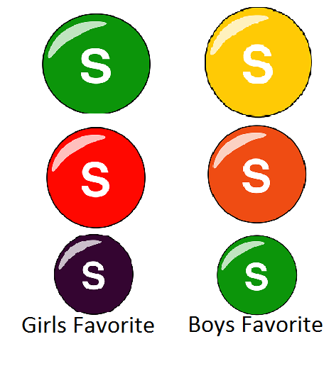

How do peoples' favorite color of skittles and their gender compare?
We gave out a survey to 90 people asking what there favorite color of skittle is and we also recordeed thier gender
Our results show that
Girls Prefer in this order Green, Red, Purple, Yellow, Orange
Boys Prefer in this order Yellow, Orange, Green, Red, Purple
We found that girls are as likley to say that they like a color of skittle as they are not to care, but a high percentage of boys don't care.
It seems that girls and boys don't like the same flavors of skittles, boys like the colors that girls do not like.
Green is the color most liked by both genders.
Girls Don't Give fake / troll responces while some boys do



Conclusion
More boys don't care about the flavor of skittles then girls do
Boys are more willing to take the test than girls
Boys prefer the skittles in this order, Yellow, Orange and Green while Girls prefer Green, Red and Purple